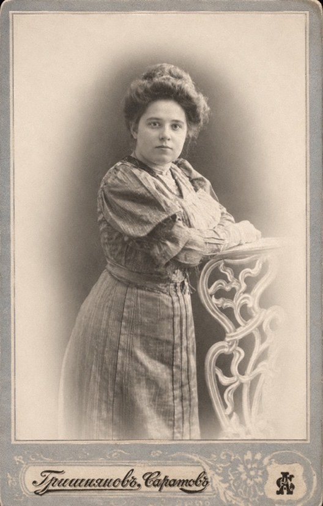
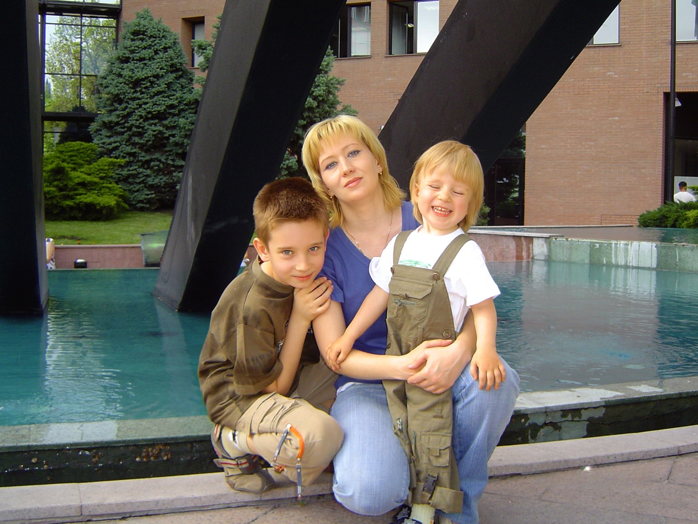

Летопись рода Каменских
Под родовым щитом
Более двух веков семейной истории
Родословное древо • Люди • Фотолетопись рода • Архив • Документы • Карта памяти
Летопись рода Каменских
Более двух веков семейной истории
Родословное древо • Люди • Фотолетопись рода • Архив • Документы • Карта памяти
География семьи Каменских охватывает несколько губерний, регионов и стран. Каждое место на этой карте связано с судьбами людей, чьи истории собраны в этой книге.

Порзово • Шклово • Ивановское • Саратов • Сердобск • Энгельс • Электросталь • Алматы
Живое дерево семьи: поколения, супруги, боковые ветви и краткие карточки людей.
Подробная база людей: связи, служение, награды, преследования и источники.
Главы, пролог, карта памяти и источники — основная повествовательная часть летописи.
Семейные фотографии, документы, карточки духовенства и архивные изображения.
Документы, источники и материалы, на которых держится история рода.
Места жизни, служения, памяти и возвращения семьи.
Вся книга на одной странице — удобно для печати, проверки и редактирования.





Память становится живой, когда её можно читать, видеть, дополнять и передавать дальше.
Если у вас сохранились документы, фотографии, письма или воспоминания, связанные с семьями Каменских, Фисейских, Добролюбовых, Богородицких, Благославовых и Гориных, автор будет признателен за любую информацию, которая поможет дополнить историю рода и сохранить её для будущих поколений.